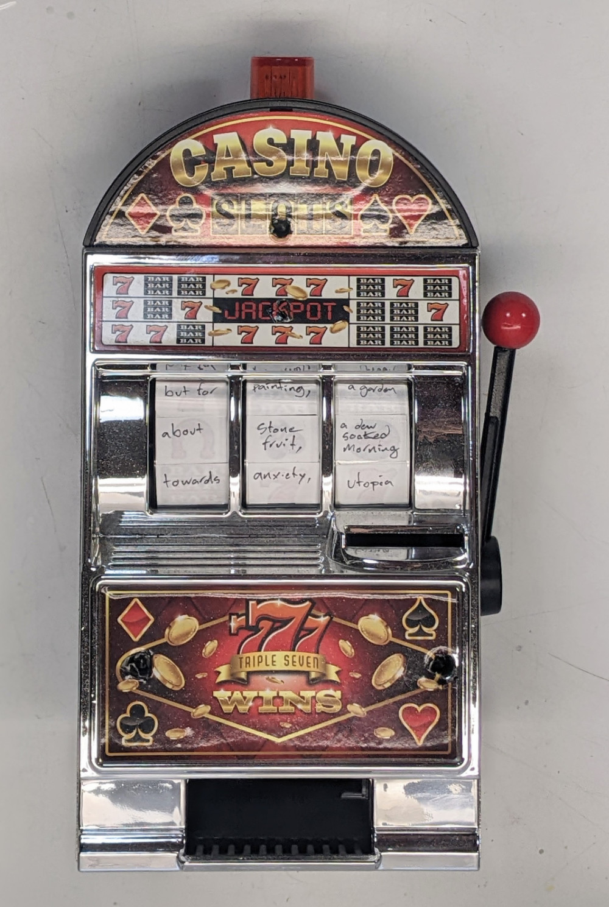

slot machine poem generator
every poem a jackpot
built from a piggy bank slot machine with all of the wheels relabeled, part of an exploration into methods of creating generative art without computers. was going to be just a study for a larger piece but it turns out that used slot machines are very expensive. the poems all have the same basic structure: the first wheel is prepositions, the second wheel subjects, the third wheel outcomes. i did not remove any of the internal circuitry so some poem combinations trigger a "jackpot" condition where the strobe on top triggers, the slot machine plays a music, and if there are any coins in the bank, it spits them out. you can see a video of it in operation here.
